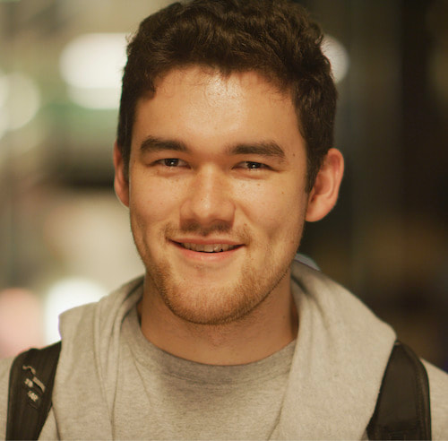

Benjamin Orr
Graduate Student
In the lab: 2020–2025
Co-mentor: Mike Keiser
Now: Director of Computational Biology and AI, Animate Biosciences
Protein design with deep learning.
Education
- Bachelor of Science, Biochemistry, Tufts University
Publications
- Orr, B., Crilly, S. E., Akpinaroglu, D., Zhu, E., Keiser, M. J. & Kortemme, T. An improved model for prediction of de novo designed proteins with diverse geometries. Preprint at https://doi.org/10.1101/2025.06.02.657515 (2025).